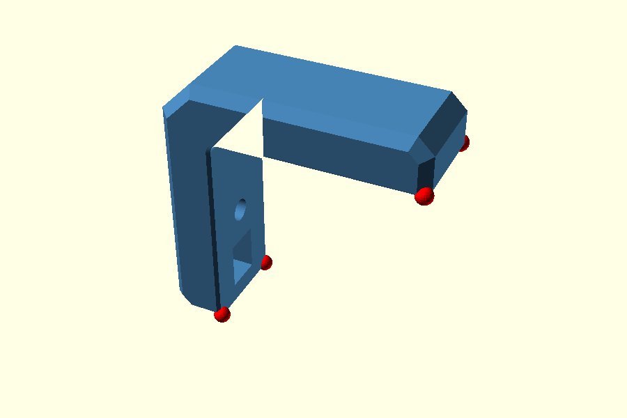
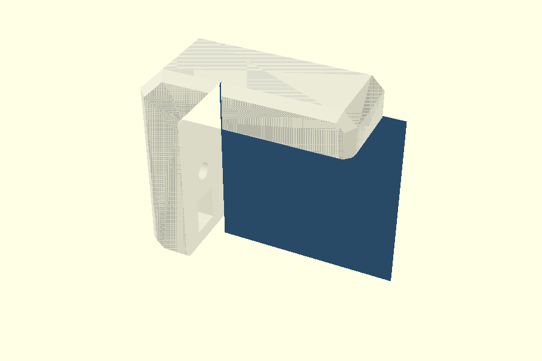
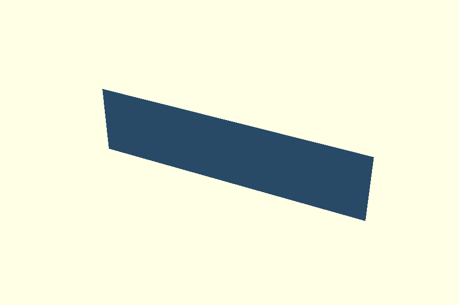
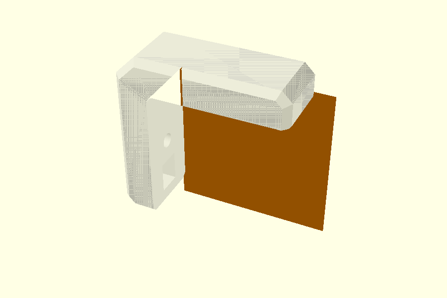
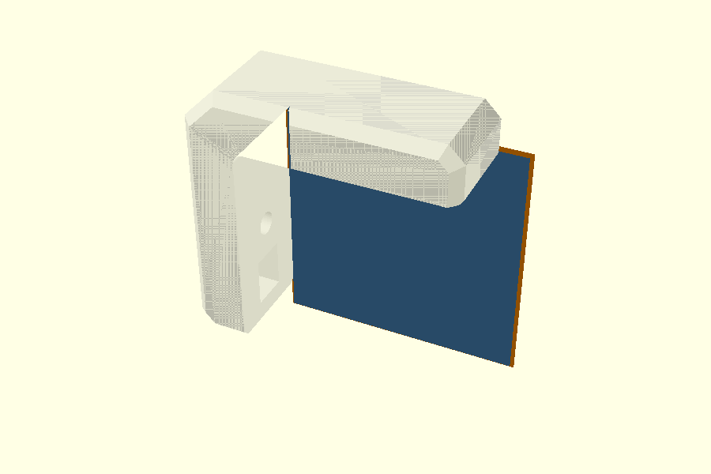
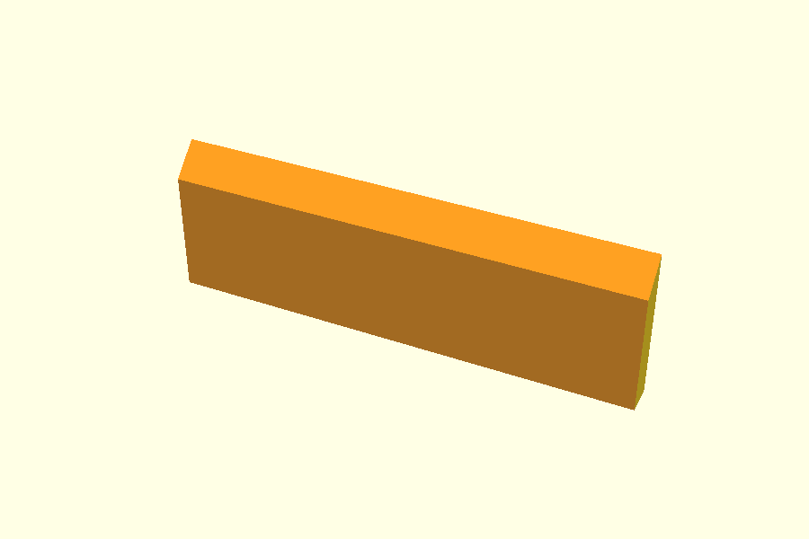
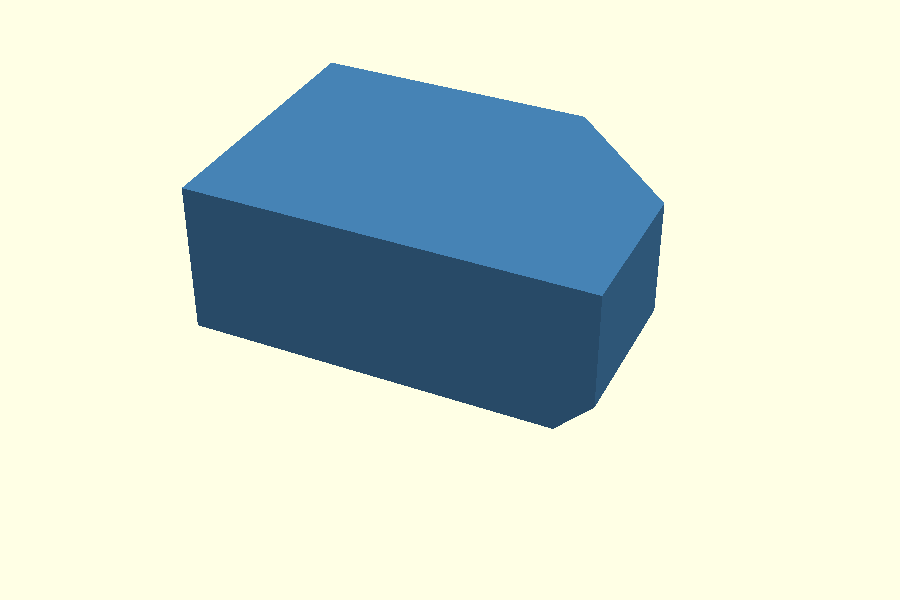
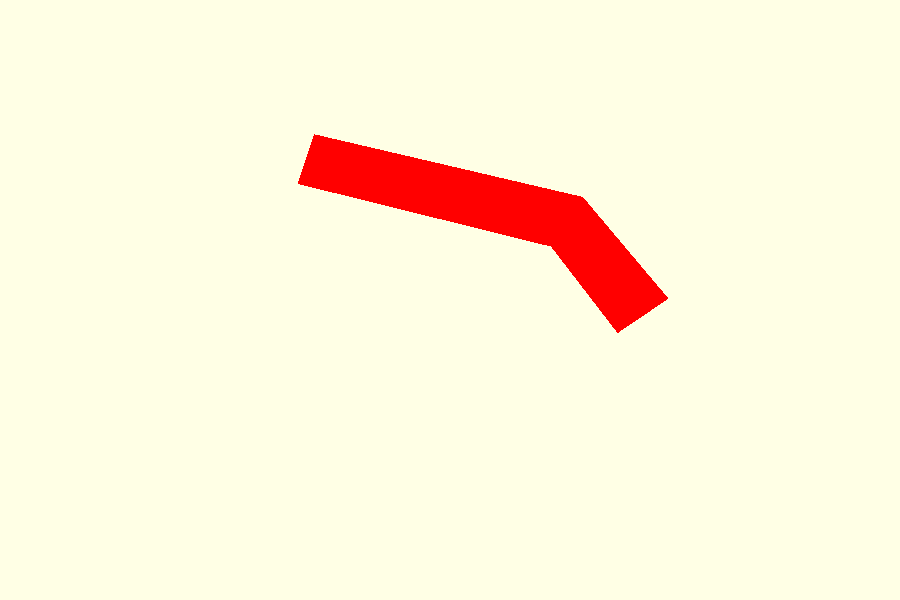

Elephant-foot hull experiment
This page starts with the complete Corner Bracket. Only after the problem is visible on the real model do we zoom into one arm tip and inspect the two elephant-foot hull surfaces.
The question is:
Can the four small arm-tip corrections be absorbed into the same two hull surfaces that already create the main elephant-foot relief?
The production model can be tested directly with:
openscad
ef_corner_correction = true;
Set it to false to disable only the four small arm-tip corrections.
The two main inside_relief_envelope() hulls remain active.
1. First verify the complete bracket
Before looking at hull input surfaces, establish exactly what already works.
1A. Complete bracket — only the two main EF hulls
This is the real printable bracket with:
- the normal L profile;
- the outside
csside chamfers; - nut pockets and bolt holes;
- both main
inside_relief_envelope()hulls; - no
relief_corner_miters().
This is also what you get in the real model when:
openscad
ef_corner_correction = false;
Most of the elephant-foot relief is already correct. The remaining problem is local to the places where the EF relief reaches an arm end.
1B. The four problem locations on the complete bracket
The same bracket is shown again with four red location markers:

The red spheres are deliberately just markers, not the correction geometry itself. Their only purpose is to make the four tiny junctions visible at whole-bracket scale.
There are four because the bracket has:
- two arm ends; and
- two print-facing Y sides.
So this establishes the starting point:
The main two-hull elephant-foot construction works over the long contact edges and inside radius. The unresolved geometry is concentrated at the four arm-tip / side-chamfer junctions.
The exact missing cutting volume is shown later in section 3A, after we zoom into one of these marked locations.
1C. Complete working bracket — correction enabled
Now enable the current correction:
openscad
ef_corner_correction = true;

This is the production reference. The rest of this page asks whether the difference between 1A and 1C can be generated by reshaping only the two existing EF hull surfaces.
2. How one main EF hull is built
Now zoom into one horizontal arm end on the +Y print side.
The sequence deliberately mirrors the outside cs hull walkthrough:
source profile → surface A → surface B → both surfaces → hull → result
2A. Source opening profile
The main EF cutter starts from the empty quadrant between the two L arms, including the rounded inside-corner boundary:

2B. First hull surface — Y = 9.4 mm
The first thin surface uses the unchanged opening:

openscad
opening_layer(W/2 - ef);
With the defaults W=20 and ef=0.6, this is Y=9.4 mm.
2C. Second hull surface — Y = 10.0 mm
The second surface lies on the print face and expands the opening by
ef=0.6:

openscad
opening_layer(W/2, ef);
2D. Both hull surfaces together
These are the only two children passed to the main hull() on this side:

Blue is the unchanged opening at Y=9.4; orange is the expanded opening at Y=10.0.
2E. Resulting hull

hull() connects those two surfaces with the sloping EF transition.
2F. Result after subtracting the main hull

This local view is the same geometry as the complete bracket in 1A. The small arm-tip problem is now large enough to inspect.
3. What exactly is missing at the arm tip?
3A. Exact missing cutting volume
Subtract the main-hull cutter from the working reference cutter:

The red solid is the exact extra cutting volume that turns the main-hull result into the working result at this one arm tip.
3B. Working cutter
The current reference cutter is:
- the same main EF hull; plus
- the local arm-tip miter hull.

3C. Working local result

This is the local form of the complete working bracket shown in 1C.
4. Test the strongest two-surface version
Instead of guessing a new tip polygon, take the exact cross-sections of the working cutter itself at the same two Y positions.
That gives the proposed two-surface method the best possible input shapes at Y=9.4 and Y=10.0.
4A. Exact reference surfaces

These shapes are obtained with projection(cut=true) from the working
cutter. No hand-calculated cs point is used.
4B. Hull of those exact two surfaces

4C. Candidate bracket result

4D. XOR against the working reference

An empty XOR would mean equivalence. Visible material means the candidate does not reproduce the reference.
4E. Overcut

This is material removed by the candidate but not by the working reference.
4F. Undercut

This is material removed by the working reference but missed by the candidate.
5. Measured result
CI renders the same local experiment as STL and measures the cutting volumes:
cs |
ef |
Reference | Two-surface candidate | XOR | Overcut | Undercut | Missing tip before correction |
|---|---|---|---|---|---|---|---|
| 2.0 | 0.6 | 1.2433 | 2.4922 | 1.9006 | 1.5743 | 0.3263 | 0.3772 |
| 3.0 | 1.2 | 6.0395 | 9.1928 | 6.3398 | 4.7466 | 1.5932 | 2.0005 |
| 2.0 | 0.3 | 0.3101 | 0.8152 | 0.7139 | 0.6095 | 0.1044 | 0.1108 |
Volumes are mm³ and apply only to the cropped horizontal arm-tip region.
The test therefore says something narrower than “a hull solution is impossible”:
Using only two hull surfaces at the existing Y positions does not reproduce the current working arm-tip geometry, even when those two surfaces are exact sections of the working cutter.
A different construction with more Y sections or a different decomposition would be a different experiment.
Related pages
- Chamfer Guide — actual bracket construction only.
- Hull Guide — general
hull()introduction. - Polygon Guide — 2D inside-radius construction.